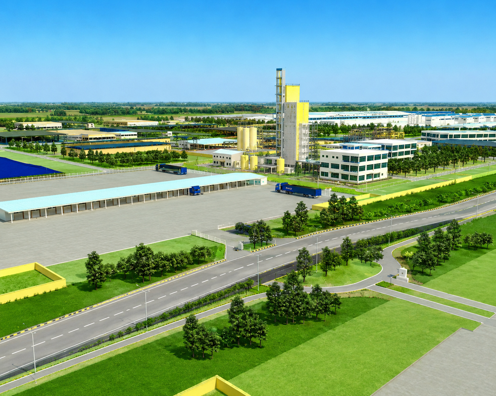
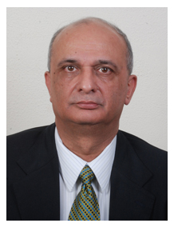

Vision
To setup industrial infrastructure to foster industry, economic growth, sustainable economic development and create employment opportunities.

IFFCO Kisan SEZ Limited (IKSEZ) is a wholly owned subsidiary and a unique initiative of IFFCO, a globally acclaimed cooperative institution, with the objective of promoting industrial growth, generate employment and contribute to overall development of the region as well the country.
Towards this, IKSEZ is being developed in an area of 2776.23 Acres at SPSR Nellore, Andhra Pradesh. As a developer of the industrial park, IKSEZ strives to provide best in class infrastructure and services to investors so that they can work in a hassle free manner focusing on their business goals.
Acres under development at SPSR Nellore, Andhra Pradesh
Acres of Multiproduct Special Economic Zone
Acres of Domestic Tariff Area (DTA)
To setup industrial infrastructure to foster industry, economic growth, sustainable economic development and create employment opportunities.
To develop state of the art Industrial Park through a unique “Farmer Owned – Farmer Managed – Farmer Focused” industrial park with world class infrastructure for setting up multiproduct units and attract domestic and global manufacturing entrepreneurs with a focus on agro-based industries.

Mr. Rakesh Kapur is the Jt. Managing Director and CFO, Indian Farmers Fertiliser Cooperative Ltd (IFFCO), which is the largest fertilizer Cooperative in the world with a turnover of USD 5.00 Billion (2011-12). Apart from planning, managing and monitoring the Finance and Accounts related functions of IFFCO, he has also been extensively involved with all the new Projects, Acquisitions, Joint Ventures and Diversification initiatives of IFFCO from their stage of inception.
Mr. Rakesh Kapur is an ex-Indian Revenue Service Officer (1978 Batch) who has held various senior assignments in Government of India, which included Joint Secretary (Commercial), Telecom Regulatory Authority of India (TRAI); Director in the Ministry of Chemicals & Fertilizers, Additional Assessor & Collector, Municipal Corporation of Delhi apart from the postings in the Income Tax Department.
Mr. Rakesh Kapur is also the Managing Director, IFFCO Kisan SEZ Ltd (IKSEZ), which is a wholly owned subsidiary of IFFCO.
Born on September 26, 1954, Mr. Kapur holds B.Tech. Degree in Mechanical Engineering (in First Class with Distinction) from Indian Institute of Technology (IIT), New Delhi and a Post Graduation in Management. He has traveled widely and participated in various national and international Seminars / Conferences, and presented papers on different subjects. He is a Director on the Boards of a number of Indian / Overseas Companies.